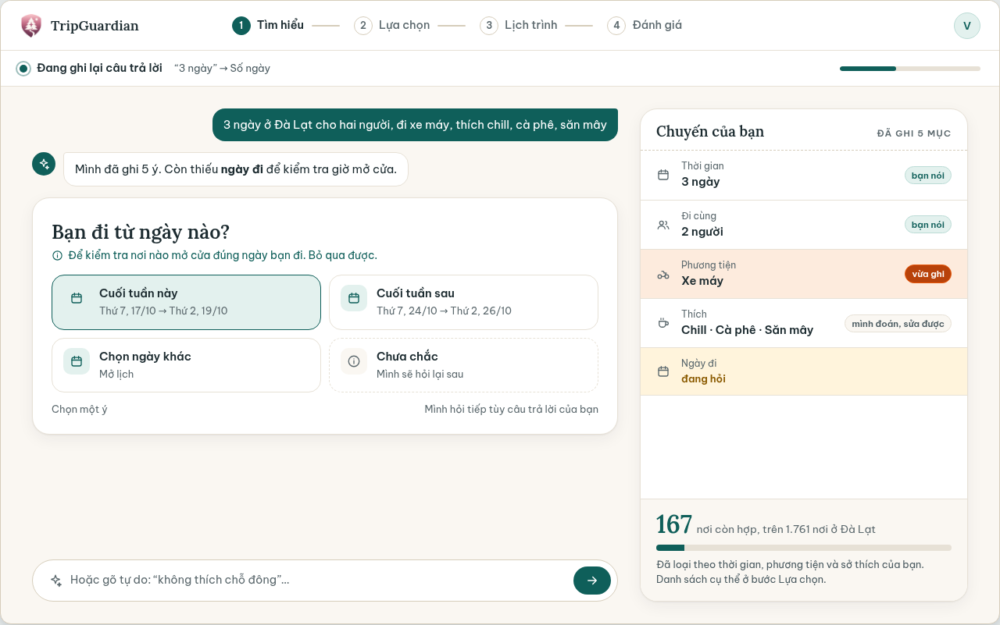
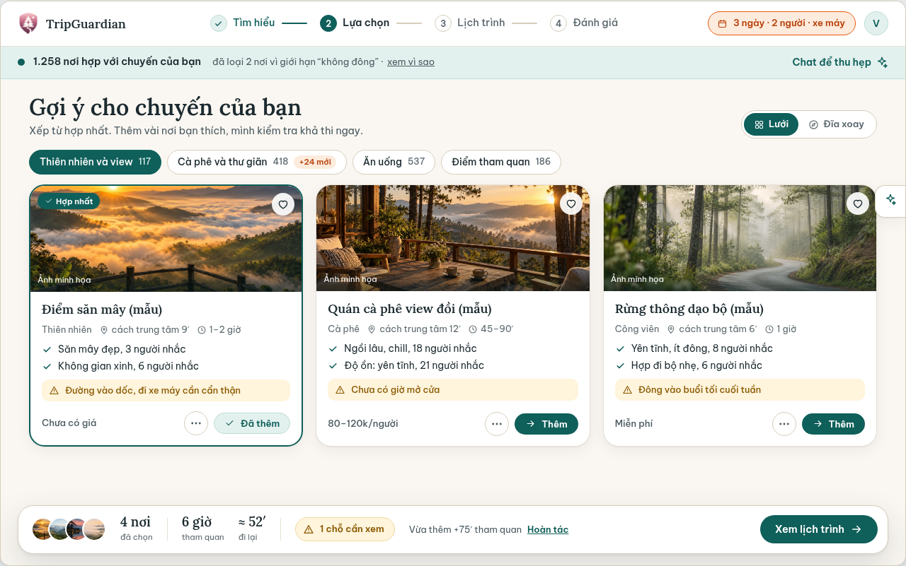
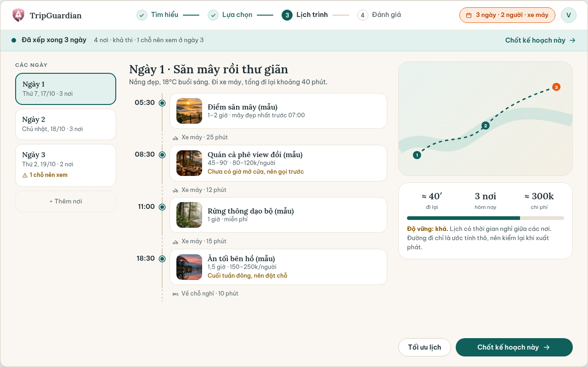
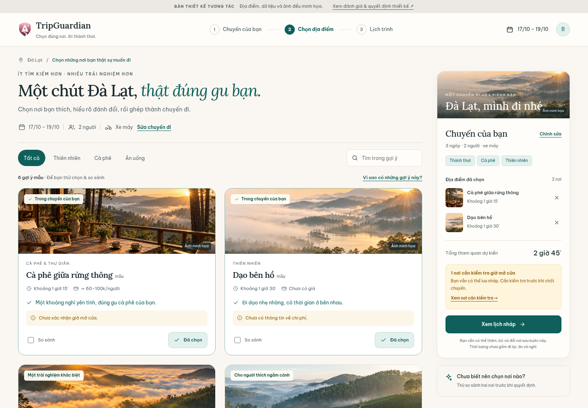

TRIPGUARDIAN · ĐÁNH GIÁ & ĐỀ XUẤT · 12.10.2026
Đẹp hơn để nhìn.
Dễ hơn để quyết định.
Bản hiện tại có nền tảng thị giác tốt. Điều còn thiếu là một không gian giúp người dùng đối chiếu địa điểm, nhìn thấy lựa chọn của mình và xử lý thông tin chưa chắc chắn ngay tại chỗ.
Thử bản thiết kế mới →Phạm vi và căn cứ
Đánh giá đúng docs/design/proposal-2026-10/index.html: ba màn Tìm hiểu, Lựa chọn và Lịch trình. Ảnh dưới đây được chụp trực tiếp từ HTML trong lần đánh giá này, ở cửa sổ 1440 × 1000; mỗi khung gốc có kích thước 1280 × 800. Kiểm tra bổ sung ở 390 × 844 và đọc DOM/CSS.
Ưu tiên máy tính, theo lựa chọn của bạn. Căn cứ sản phẩm: Project_Context.md, UX_Design_Brief.md, ARCHITECTURE.md, RULE.md và các token giao diện hiện có.
Đây là đánh giá thiết kế từ màn hình và mã nguồn, chưa phải kết quả thử nghiệm với người dùng. Các rủi ro về nhận thức và hành vi dưới đây là giả thuyết cần kiểm chứng. Bản gốc là mockup tĩnh, nên không suy ra ứng dụng thật cũng có lỗi tương tác tương tự.
1. Hiểu chuyến đi — rõ cấu trúc, cần rõ quyền chỉnh sửa

Nên giữ: một câu hỏi mỗi lúc, lý do cần hỏi và bản tóm tắt chuyến đi luôn nhìn thấy. Đây là nền tảng tốt để người dùng biết hệ thống hiểu mình ra sao.
- Ưu tiên cao: “Chill · Cà phê · Săn mây” có trong lời người dùng nhưng được gắn “mình đoán”. Nhãn nguồn sai khiến người dùng khó biết điều gì cần xác nhận. Thiết kế thật cần phân biệt “Bạn vừa nói”, “Gợi ý từ hồ sơ” và “Chưa xác nhận”.
- Ưu tiên cao: các dòng tóm tắt không có hành động sửa rõ ràng. Mở phần chỉnh thông tin ngay tại tiêu đề “Chuyến của bạn”, giữ nguyên địa điểm đã chọn khi quay lại.
- Ưu tiên vừa: trạng thái “đang ghi” xuất hiện cùng câu hỏi đã sẵn sàng và các lựa chọn có vẻ bấm được. Trạng thái xử lý cần cục bộ, không làm người dùng nghĩ cả màn hình đang bận.
- Ưu tiên vừa: số 167 nơi còn hợp không nói người dùng nên làm gì tiếp theo. Ưu tiên xác nhận thông tin chuyến và đường đến gợi ý; số lượng ứng viên chỉ là thông tin phụ.
Đề xuất: prototype dùng biểu mẫu ngắn, chỉnh được, để kiểm tra bố cục và sự liên tục của trạng thái. Khi đưa vào app thật, giữ khả năng nhập tự nhiên/chat đã có; chưa đủ bằng chứng để bỏ chat hoặc kết luận biểu mẫu hiệu quả hơn.
2. Chọn địa điểm — có hình ảnh tốt, chưa đủ hỗ trợ đối chiếu

Nên giữ: ảnh dẫn mắt, lý do phù hợp nằm ngay trên thẻ, điểm cần cân nhắc xuất hiện trước khi thêm và một thanh tổng hợp lựa chọn.
- Ưu tiên cao: thanh đáy chỉ hiện ảnh nhỏ và tổng số, khó nhớ bốn nơi đang chọn là những nơi nào. Trên máy tính, cột bên phải có tên từng nơi và nút bỏ giúp đối chiếu mà không rời danh sách.
- Ưu tiên cao: So sánh nằm trong menu “…”, dù đây là hành động chính khi phân vân. Đưa checkbox “So sánh” ra ngoài, giới hạn hai nơi để bảng ngắn và dễ đọc.
- Ưu tiên cao: “1 chỗ cần xem” không cho biết đó là địa điểm nào, thiếu thông tin gì và cần làm gì. Đổi thành “1 nơi cần kiểm tra giờ mở cửa” và mở đúng danh sách cần kiểm tra.
- Ưu tiên vừa: nhãn “Hợp nhất” và hơn một nghìn “nơi hợp” dễ tạo cảm giác chắc chắn quá mức; thẻ vẫn báo đường dốc và giờ chưa rõ. Dùng lời giải thích phù hợp theo từng tiêu chí, không biến xếp hạng thành bảo đảm.
- Ưu tiên vừa: “không đông” được trình bày như giới hạn dùng để loại cứng. Cần xác định đây là sở thích hay yêu cầu bắt buộc từ dữ liệu chuyến, không suy diễn từ cách viết. Sở thích không thể thay thế kiểm tra ràng buộc vật lý.
Đề xuất: lưới hai cột để mỗi thẻ đủ rộng; cột chuyến đi 306–326 px; chi tiết mở dạng ngăn bên phải; trạng thái đã chọn giữ khi tìm kiếm, lọc và chuyển bước. Người dùng mới xem ít gợi ý trước, mở rộng khi cần; sáu thẻ trong prototype chỉ là bộ dữ liệu thử, chưa kết luận sáu là số tối ưu.
3. Lịch trình — dễ đọc theo ngày, dữ liệu hiển thị cần nhất quán

Nên giữ: đọc theo ngày, thời gian đi lại nằm giữa điểm dừng và cảnh báo đặt cạnh nơi có vấn đề.
- Ưu tiên cao: ngày 1 ghi “3 nơi” nhưng có bốn điểm dừng. Các chặng 25 + 12 + 15 + 10 phút thành 62 phút, khác con số khoảng 40 phút. Số lượng, thời lượng và tổng hợp phải xuất phát từ cùng dữ liệu.
- Ưu tiên cao: trạng thái “khả thi”, thời tiết cụ thể và thanh độ vững 72% gợi cảm giác đã kiểm chứng, trong khi giờ mở cửa vẫn thiếu và đường đi chỉ ước tính. Phân biệt “lịch nháp”, “cần kiểm tra” và “đã kiểm tra”; chỉ cho chốt khi thỏa contract thực tế.
- Ưu tiên vừa: đường cong minh họa với ba chấm không giúp xác định vị trí bốn điểm dừng. Bản mẫu mới không vẽ tuyến đường giả. Bản app thật cần bản đồ có tọa độ đúng và tuân theo yêu cầu Google Maps khi hiển thị dữ liệu Google.
- Ưu tiên vừa: cờ cần xem ở ngày 3 nhưng điểm thiếu giờ mở cửa lại xuất hiện ngay ngày 1. Cảnh báo tổng hợp phải truy ngược được về đúng ngày và đúng điểm dừng.
Đề xuất: số điểm và tổng thời lượng tính từ lựa chọn; từng nơi vẫn mở được chi tiết hoặc bỏ; chừa khoảng trống cho nghỉ. Prototype chia đều các nơi qua ngày để thử trạng thái, không tính tuyến đường hay giờ đến. Nút kết thúc là “Tải bản nháp”, không phải “Chốt kế hoạch”.
Khả năng tiếp cận và giới hạn bằng chứng
DOM bản gốc có 0 button và 0 script; nhiều nút được vẽ bằng span/div. Đây là giới hạn của mockup tĩnh: chưa thể thử focus, chọn bằng bàn phím, đóng hộp thoại, xử lý lỗi hay hoàn tác. Không đánh đồng giới hạn đó với lỗi đã xác nhận của app thật.
Ở chiều rộng 390 px, tài liệu gốc rộng 1320 px. Bản gốc có ghi “Chỉ desktop”, nên đây là giới hạn phạm vi đã công bố. Bản mới ưu tiên desktop nhưng có bố cục thu gọn và thanh lựa chọn riêng cho điện thoại.
Bản tương tác dùng button/input thật, nhãn cho điều khiển, focus hiển thị, dialog có tên, Escape để đóng, tab ngày dùng phím mũi tên và chuyển động tắt theo reduced-motion. Chưa kiểm định đầy đủ WCAG, chưa thử bằng trình đọc màn hình hoặc với người khuyết tật.
Ba hướng thiết kế đã cân nhắc
| Hướng | Điểm mạnh | Đánh đổi |
|---|---|---|
| Danh sách + cột chuyến đi — đề xuất | Đối chiếu nơi đang xem với nơi đã chọn; giữ bối cảnh; tận dụng màn hình máy tính. | Giảm bề rộng danh sách; cần ngăn chi tiết và bố cục riêng ở màn hẹp. |
| Chat làm trung tâm | Tốt cho người chưa rõ nhu cầu, nhập danh sách tự nhiên, được hướng dẫn. | Dễ phải đọc lại hội thoại khi so sánh nhiều lựa chọn; trạng thái chọn nơi nên nằm ngoài chat. |
| Bản đồ làm trung tâm | Tốt cho người biết khu vực và muốn hiểu khoảng cách. | Cần dữ liệu tọa độ, tuyến đường đáng tin; ít không gian giải thích sự phù hợp và bằng chứng. |
Ba hướng là cách tổ chức thông tin, không phải ba bộ màu. Prototype triển khai hướng thứ nhất; chat và bản đồ có thể là công cụ bổ trợ khi tích hợp hệ thống thật.
Hệ thị giác của bản mới

Giữ nền giấy #faf7f2, xanh thông #0f5f5a, chữ đậm #1b2a2f; dùng Lora + Be Vietnam Pro từ chính bản tham chiếu. Tiêu đề có tính biên tập, nội dung và nút dùng sans-serif dễ đọc. Xanh dành cho hành động chính; vàng dành cho điều cần kiểm tra; không dùng màu đỏ cho việc lọc bình thường.
Ảnh rộng vừa đủ để nhận diện, thông tin chia theo thứ tự: tên → thời lượng/giá → lý do phù hợp → điểm cân nhắc → hành động. Thẻ 18 px, nút 9 px, khoảng cách 16–36 px. Các lựa chọn không có nguồn thật đều mang nhãn mẫu; không dựng tên địa điểm thật hoặc review giả.
Nguồn tài sản: ảnh sao chép từ proposal-2026-10/img; icon từ HTML tham chiếu và web/src/user/ui/icons.tsx. Font dùng Google Fonts với fallback hệ thống. Không phát sinh API, tài khoản hay dịch vụ ngoài cho dữ liệu chuyến.
Thử theo cách người dùng thực sự làm
- Đến với nhu cầu mơ hồ: mở “Chuyến của bạn”, đổi số ngày, phương tiện, ghi chú; đi tiếp mà không mất lựa chọn.
- Phân vân hai nơi: chọn So sánh ở hai thẻ, đọc đánh đổi rồi thêm một nơi ngay trong bảng.
- Lo thông tin chưa rõ: mở chi tiết, kiểm tra giờ/giá/nguồn; phân biệt dữ liệu mẫu đã biết và chưa có.
- Đổi ý: bỏ một nơi từ cột chuyến đi hoặc lịch, chọn Hoàn tác; các nơi khác vẫn còn.
- Có yêu cầu bắt buộc: bật “Cần lối đi không bậc”. Nơi không đáp ứng hoặc chưa có bằng chứng đều bị loại; nếu đã chọn thì bỏ và báo rõ.
- Xem toàn chuyến: mở lịch nháp, chuyển ngày, quay lại bổ sung; tổng số và thời lượng phản ánh cùng tập lựa chọn.
Để xác nhận UX tốt hơn: thử bản cũ và mới với người đi tự túc. Quan sát thời gian chọn được hai nơi, có tìm thấy So sánh không, có giải thích đúng “chưa xác nhận” không, có tự sửa được thông tin chuyến không và có nhận ra lịch chưa chốt không. Không khẳng định cải thiện hiệu suất trước khi đo.
Phạm vi bàn giao
Bản HTML/CSS/JavaScript độc lập: ba màn, tìm kiếm/lọc, so sánh hai nơi, ngăn chi tiết, thêm/bỏ/hoàn tác, sửa chuyến, lưu trạng thái trên trình duyệt, lịch nháp, tải văn bản và responsive. Dữ liệu cố định gồm sáu mẫu; ghi chú được lưu nhưng chưa phân tích; nhịp đi chưa điều khiển thuật toán. Không có gọi model, xác thực lịch khả thi, bản đồ trực tiếp hay dữ liệu corpus.
Không thay đổi code ứng dụng hoặc bản tham chiếu. Quyết định chuyển phản hồi sau chuyến thành tác vụ theo ngữ cảnh chỉ là đề xuất: prototype tập trung ba bước chuẩn bị, không xóa chức năng phản hồi trong hệ thống thật.
Kiểm chứng trình duyệt: 37 kiểm tra hành vi và bố cục, gồm tìm kiếm không dấu, kết quả rỗng, lọc, so sánh tối đa hai nơi, mở/đóng chi tiết, thêm/bỏ/hoàn tác, loại nơi chưa đáp ứng yêu cầu bắt buộc, lưu sau tải lại, chia ngày không lặp địa điểm, điều khiển tab bằng bàn phím và tải tệp. Kiểm tra tràn ngang ở 320, 390, 768, 1024, 1280, 1440 và 1920 px; không ghi nhận lỗi JavaScript. Đây là kiểm chứng prototype, không phải đo hiệu quả UX với người dùng.
Ảnh trạng thái mới: So sánh · Chi tiết · Lịch nháp · Thông tin chuyến · Điện thoại.
Mở bản tương tác →